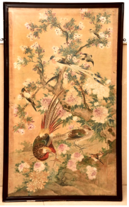

🔇 Is bhasha me is vastu ka audio abhi uplabdh nahi hai.
8. VII - 27: पक्षियों की विविधताएँ

8. VII - 27
कपड़े पर जलरंग (वॉटरकलर) चित्रण है, जिसमें विभिन्न प्रकार के पक्षियों को पेड़ की शाखा पर बैठे दिखाया गया है। चित्र का फ्रेम किया गया है, और पक्षी के बाएं पैर के बाहर सफेद सींग का घोंसला दिखाया गया है। जलरंग वह तकनीक है जिसमें रंगकणों को पानी आधारित घोल में घुलाकर किसी सतह (आमतौर पर कागज) पर ब्रश की मदद से लगाया जाता है। इसे इसकी चमक और पारदर्शी रंगों के लिए जाना जाता है। इसमें महीन पीसे हुए रंगकणों का उपयोग किया जाता है, जो अक्सर खनिजों, रेजिन या सब्जियों जैसे प्राकृतिक स्रोतों से प्राप्त होते हैं। गम अरबीक एक सामान्य बाइंडर है, जो रंगकणों को फैलाता है और उन्हें सतह पर चिपकने में मदद करता है। जलरंग आमतौर पर सफेद कागज पर लगाया जाता है, हालांकि कभी-कभी चर्मपत्र (परचमेंट) का भी उपयोग होता है। जलरंग कला की शुरुआत यूरोप में पुरापाषाण काल की गुफा चित्रकला से हुई थी और इसे कम से कम मिस्र के समय से पांडुलिपि चित्रण के लिए उपयोग किया जाता रहा है। यह चित्र जापान का है और 19वीं शताब्दी का है।
8. VII - 27: Varieties of Birds
8. VII - 27
A watercolour painting on cloth, showing various kinds of birds perched on the branch of a tree. The picture is framed, and a white horn nest is shown outside the bird's left foot. Watercolour is the technique in which pigments are dissolved in a water-based solution and applied to a surface (usually paper) with the help of a brush. It is known for its luminosity and transparent colours. It uses finely ground pigments, often obtained from natural sources such as minerals, resins or vegetables. Gum arabic is a common binder, which disperses the pigments and helps them adhere to the surface. Watercolour is usually applied to white paper, though parchment is sometimes used as well. Watercolour art began in Europe with the cave paintings of the Palaeolithic period and has been used for manuscript illustration at least since Egyptian times. This painting is from Japan and dates from the 19th century.
8. VII-27: వివిధ రకాల పక్షుల
8. VII-27
ఈ చిత్రం 19వ శతాబ్దానికి చెందిన జపాన్ కళాఖండం. ఇది వస్త్రంపై వేసిన వాటర్ కలర్ పెయింటింగ్. ఈ ఫ్రేమ్ చేయబడిన చిత్రంలో, వివిధ రకాల పక్షులు ఒక చెట్టు కొమ్మపై కూర్చుని ఉన్నట్లు చిత్రీకరించబడింది, మరియు ఒక పక్షి ఎడమ కాలి బయట తెలుపు కొమ్ము గ్రోవ్ కనిపిస్తుంది. వాటర్ కలర్ పెయింటింగ్ అనేది నీటి ఆధారిత ద్రావణంలో రంగులను ఉపయోగించి వేసే పద్ధతి. ఈ పద్ధతి కాంతిమత్త మరియు పారదర్శక రంగులకు ప్రసిద్ధి. ఇందులో సాధారణంగా సూక్ష్మంగా దంచిన సహజ వర్ణద్రవ్యాలు మరియు గమ్ అరేబిక్ ( వంటి బైండర్ (అతికించే పదార్థం) ఉపయోగిస్తారు. వాటర్ కలర్ కళకు సంబంధించిన ఆధారాలు ఐరోపాలోని పాలియోలిథిక్ గుహ చిత్రాల కాలం నాటివి, మరియు ఈజిప్షియన్ల కాలం నుండి మాన్యుస్క్రిప్ట్ ఇలస్ట్రేషన్ కోసం దీనిని ఉపయోగిస్తున్నారు.
8. VII-27: برڈکیاقسام
8. VII-27
یہ آبی رنگوں کی مصوری کپڑے پر کی گئی ہے ، جس میں درخت کی ایک شاخ پر بیٹھے مختلف اقسام کے پرندے دکھائے گئے ہیں۔ یہ فن پارہ فریم کیا گیا ہے اور ایک پرندے کے بائیں پاؤں کے قریب سفید سینگ والا جنگلی ہرندکھایا گیا ہے۔واٹر کلر پینٹنگ ایک ایسی مصوری کی تکنیک ہے جس میں رنگوں کے ذراتکو پانی پر مبنی محلول میں گھول کر برش کے ذریعے لگایا جاتا ہے۔ یہ دستکاریشفافیت، چمک، اور لطیفرنگوں کے لیے مشہور ہے۔اس میں باریک پیسے ہوئے رنگ استعمال کیے جاتے ہیں، جو عموماً قدرتی ذرائع جیسے معدنیات، ریزنیا سبزیوں سے حاصل کیے جاتے ہیں۔عربی گوند ایک عام بائنڈر کے طور پر استعمال ہوتی ہے، جو رنگ کے ذرات کو پھیلانے میں مدد دیتی ہے اور انہیں سطح سے چپکائے رکھتی ہے۔ آبی رنگ زیادہ تر سفید کاغذ پر استعمال کیے جاتے ہیں، اگرچہ بعض اوقات چمڑے کی جھلیپر بھی کام کیا جاتا ہے۔ آبی رنگ مصوری کی تاریخ یورپ کے پےلیو لیتھیک عہد کی غاروں میں بنی تصویروں تک جاتی ہے، اور یہ فن کم از کم مصری عہد سے مخطوطات کی تزئین و آرائش کے لیے استعمال ہوتا رہا ہے۔ یہ آبی رنگوں کی پینٹنگ جاپان سے تعلق رکھتی ہے اور اس کا زمانہ انیسویں صدی ہے
8. VII - 27: পাখিদের বৈচিত্র্য
8. VII - 27
কাপড়ের উপর জলরঙের চিত্রণ রয়েছে, যাতে বিভিন্ন ধরনের পাখিকে গাছের ডালে বসে থাকতে দেখানো হয়েছে। ছবিটি ফ্রেম করা হয়েছে, এবং পাখির বাঁ পায়ের বাইরে সাদা শিঙের বাসা দেখানো হয়েছে। জলরঙ হলো সেই কৌশল যাতে রঙকণাকে জল-ভিত্তিক দ্রবণে মিশিয়ে কোনো তলের (সাধারণত কাগজ) উপর তুলির সাহায্যে লাগানো হয়। এটি এর উজ্জ্বলতা ও স্বচ্ছ রঙের জন্য পরিচিত। এতে মিহি করে পেষা রঙকণা ব্যবহার করা হয়, যা প্রায়ই খনিজ, রজন বা উদ্ভিজ্জ উৎসের মতো প্রাকৃতিক উৎস থেকে পাওয়া যায়। গাম অ্যারাবিক একটি সাধারণ বাইন্ডার, যা রঙকণাকে ছড়িয়ে দেয় এবং সেগুলিকে তলের উপর আটকাতে সাহায্য করে। জলরঙ সাধারণত সাদা কাগজে লাগানো হয়, তবে কখনও কখনও চর্মপত্রও (পার্চমেন্ট) ব্যবহার করা হয়। জলরঙ শিল্পের সূচনা হয়েছিল ইউরোপে প্রাচীন প্রস্তরযুগের গুহাচিত্র থেকে এবং অন্তত মিশরীয় যুগ থেকে এটি পাণ্ডুলিপি চিত্রণের জন্য ব্যবহৃত হয়ে আসছে। এই ছবিটি জাপানের এবং ১৯শ শতাব্দীর।
8. સાતમી-27: પક્ષીઓના વિવિધ પ્રકાર
8. સાતમી-27
રથ પર સ્ત્રીની આકૃતિ કોતરેલો શંખ, જેમાં આગળ ત્રણ મહિલાઓ અને પાછળ એક ઉભી છે. રથને બે મહિલાઓ ચલાવે છે, આગળની એક રણશિંગડું વગાડે છે અને પાછળની એક જમણા ખભા પર ભાલો રાખે છે. ઇંગ્લેન્ડમાં બનેલ એક દુર્લભ, ઉત્કૃષ્ટ અને વિગતવાર હાથથી કોતરવામાં આવેલ મોટો શંખ. શંખ હિન્દુ અને બૌદ્ધ બંને ધાર્મિક વિધિઓમાં એક મહત્વપૂર્ણ પ્રતીક છે. હિન્દુ ધાર્મિક વિધિમાં, શંખને વિષ્ણુના રણશિંગડા અથવા પ્રસાદ માટેના પાત્ર તરીકે પૂજનીય માનવામાં આવે છે, અને 11મી સદીની શરૂઆતમાં ઉત્તર ભારતમાં શંખને વિસ્તૃત કોતરણીવાળી સજાવટ આપવામાં આવતી હતી. શંખને શક્તિ, અધિકાર અને દૈવી જોડાણનું પ્રતીક માનવામાં આવે છે. આ શંખ 20મી સદીનો છે.
8. VII-27: ವೆರೈಟೀಸ್ ಆಫ್ ಬರ್ಡ್ಸ್
8. VII-27
ಬಟ್ಟೆಯ ಮೇಲೆ ಬಿಡಿಸಲಾದ ಜಲವರ್ಣದ ಅದ್ಭುತ ವರ್ಣಚಿತ್ರ ಇದಾಗಿದ್ದು, ಮರದ ಕೊಂಬೆಯೊಂದರ ಮೇಲೆ ಕುಳಿತಿರುವ ವಿವಿಧ ಬಗೆಯ ಪಕ್ಷಿಗಳನ್ನು ಇದು ಬಿಂಬಿಸುತ್ತದೆ. ಚೌಕಟ್ಟನ್ನು ಹೊಂದಿರುವ ಈ ಚಿತ್ರದಲ್ಲಿ, ಪಕ್ಷಿಯ ಎಡಗಾಲಿನ ಹೊರಭಾಗದಲ್ಲಿ ಬಿಳಿ ಬಣ್ಣದ ಕೊಂಬಿನಂತಹ ರಚನೆಯೊಂದನ್ನು ಬಿಡಿಸಲಾಗಿದೆ.ಜಲವರ್ಣದ ಚಿತ್ರಕಲೆಯು ಒಂದು ವಿಶಿಷ್ಟ ತಂತ್ರವಾಗಿದ್ದು, ಇದರಲ್ಲಿ ನೀರಿನ ಆಧಾರಿತ ದ್ರಾವಣದಲ್ಲಿ ಬೆರೆಸಿದ ಬಣ್ಣದ ಪುಡಿಗಳನ್ನು ಕುಂಚದ ಮೂಲಕ ಮೇಲ್ಮೈಗೆ, ಅದರಲ್ಲೂ ವಿಶೇಷವಾಗಿ ಕಾಗದಕ್ಕೆ ಹಚ್ಚಲಾಗುತ್ತದೆ. ಈ ಕಲೆಯು ತನ್ನ ಪ್ರಕಾಶಮಾನತೆ ಮತ್ತು ಪಾರದರ್ಶಕ ಬಣ್ಣಗಳಿಗೆ ಬಹಳ ಹೆಸರುವಾಸಿಯಾಗಿದೆ.ಇದಕ್ಕಾಗಿ ನುಣ್ಣಗೆ ಅರೆಯಲಾದ ಬಣ್ಣದ ಪುಡಿಗಳನ್ನು ಬಳಸಲಾಗುತ್ತದೆ. ಇವುಗಳನ್ನು ಹೆಚ್ಚಾಗಿ ಖನಿಜಗಳು, ರಾಳಗಳು ಅಥವಾ ತರಕಾರಿಗಳಂತಹ ನೈಸರ್ಗಿಕ ಮೂಲಗಳಿಂದ ಪಡೆಯಲಾಗುತ್ತದೆ. 'ಗಮ್ ಅರೇಬಿಕ್' ಎಂಬುದು ಇದರಲ್ಲಿ ಬಳಸುವ ಸಾಮಾನ್ಯ ಅಂಟಾಗಿದ್ದು, ಇದು ಬಣ್ಣದ ಕಣಗಳನ್ನು ಹರಡುವಂತೆ ಮಾಡುತ್ತದೆ ಮತ್ತು ಅವು ಮೇಲ್ಮೈಗೆ ಭದ್ರವಾಗಿ ಅಂಟಿಕೊಳ್ಳಲು ಸಹಾಯ ಮಾಡುತ್ತದೆ. ಜಲವರ್ಣವನ್ನು ಸಾಮಾನ್ಯವಾಗಿ ಬಿಳಿ ಕಾಗದದ ಮೇಲೆ ಬಿಡಿಸಲಾಗುತ್ತದೆ, ಆದರೂ ಕೆಲವೊಮ್ಮೆ ಪ್ರಾಣಿಗಳ ಚರ್ಮದ ಕಾಗದದ ಮೇಲೂ ಇದನ್ನು ಬಳಸಲಾಗುತ್ತದೆ.ಜಲವರ್ಣದ ಕಲೆಯ ಇತಿಹಾಸವು ಯುರೋಪಿನಹಳೆಯ ಶಿಲಾಯುಗದ ಗುಹಾಚಿತ್ರಗಳಷ್ಟು ಹಿಂದಿನದ್ದಾಗಿದೆ, ಮತ್ತು ಕನಿಷ್ಠ ಈಜಿಪ್ಟ್ನ ಕಾಲದಿಂದಲೂ ಹಸ್ತಪ್ರತಿಗಳನ್ನು ವಿವರಿಸಲು ಈ ಕಲೆಯನ್ನು ಬಳಸಲಾಗುತ್ತಿದೆ.ಜಪಾನ್ ದೇಶದಲ್ಲಿ ರೂಪುಗೊಂಡಿರುವ ಈ ಸುಂದರವಾದ ಜಲವರ್ಣದ ವರ್ಣಚಿತ್ರವು 19ನೇ ಶತಮಾನದಷ್ಟು ಹಳೆಯದಾಗಿದೆ.
8. VII-27: ବିଭିନ୍ନ ପ୍ରକାରରପକ୍ଷୀଙ୍କ ଚିତ୍ର
8. VII-27
ଏଠାରେକପଡ଼ା ଉପରେ ତୁଳୀରଙ୍ଗରେ ବିଭିନ୍ନ ପକ୍ଷୀମାନଙ୍କୁ ଗଛ ଡାଳରେ ବସିଥିବାର ଚିତ୍ରିତ କରାଯିବା ସହ, ଚିତ୍ରଟିକୁ ଫ୍ରେମ୍ କରାଯାଇଅଛି,ଯେଉଁଠାରେ ଆମେ ଦେଖିପାରିବା ଗୋଟିଏ ପକ୍ଷୀର ବାମ ଗୋଡ଼ରୁ ଧଳାରଙ୍ଗରପତଳାଥୁଣ୍ଟବାହାରିଅଛି। ତୁଳୀରଙ୍ଗ ଚିତ୍ର ହେଉଛି ଏକ କୌଶଳ ଯେଉଁଥିରେ ଜଳ-ଭିତ୍ତିକ ଦ୍ରବଣରେମିଶିଥିବା ରଙ୍ଗଦ୍ରବ୍ୟଗୁଡ଼ିକୁ ବ୍ରଶ୍ ସାହାଯ୍ୟରେ ଗୋଟିଏପୃଷ୍ଠଭାଗରେ, ସାଧାରଣତଃ କାଗଜରେବ୍ୟବହାର କରାଯାଇଥାଏ। ଚିତ୍ରଟି ଏହାର ଉଜ୍ଜ୍ୱଳତା ଏବଂ ସ୍ପଷ୍ଟ ରଙ୍ଗ ପାଇଁ ଆଦୃତ, ବ୍ୟବହୃତ ସୂକ୍ଷ୍ମ ଭୂମିରେ ରଙ୍ଗଦ୍ରବ୍ୟଗୁଡ଼ିକ ପ୍ରାୟତଃ ଖଣିଜ ପଦାର୍ଥ, ରେଜିନ୍ କିମ୍ବା ପନିପରିବା ପରି ପ୍ରାକୃତିକ ଉତ୍ସରୁ ତିଆରି ହୋଇଥାଏ। ଗମ୍ ଆରବିକ୍ ଏକ ସାଧାରଣ ବାଇଣ୍ଡର ଯେଉଁଥିରେ ରଙ୍ଗଦ୍ରବ୍ୟ କଣିକାଗୁଡ଼ିକ ବିସ୍ତାରିତ ହୋଇ, ସେମାନଙ୍କୁ ସବ୍ଷ୍ଟ୍ରେଟ୍ ସହିତ ଲାଗି ରହିବାରେ ସାହାଯ୍ୟ କରିଥାଏ। ତୁଳୀରଙ୍ଗ ସାଧାରଣତଃ ଧଳା କାଗଜରେ, ଭେଲ୍ମରେ ପ୍ରୟୋଗ କରାଯାଏ। ତୁଳୀରଙ୍ଗରଚିତ୍ରକଳା ୟୁରୋପରେ ପାଲେଓଲିଥିକ୍ ଗୁମ୍ଫା ଚିତ୍ରକଳା ସମୟରୁ ଆରମ୍ଭ ହୋଇଛି। ମିଶରୀୟ ସମୟରୁ ଏହାକୁ ପାଣ୍ଡୁଲିପି ଚିତ୍ର ପାଇଁ ବ୍ୟବହାର କରାଯାଇଆସୁଅଛି। ଏହି ଚିତ୍ରଟି ଜାପାନରେଊନବିଂଶ ଶତାବ୍ଦୀରେ ଚିତ୍ରିତ ହୋଇଥିଲା।
Item 8
8. VII-27: വിവിധതരംപക്ഷികൾ
8. VII-27
തുണിയിൽ വാട്ടർ കളർ ഉപയോഗിച്ച്വരച്ച ഈ ചിത്രത്തിൽ, മരക്കൊമ്പിൽ ഇരിക്കുന്നവിവിധതരംപക്ഷികളെയാണ്ആവിഷ്കരിച്ചിരിക്കുന്നത്. ഇത്ഫ്രെയിംചെയ്തനിലയിലാണ്; പക്ഷിയുടെഇടതുകാലിന്പുറത്തായിവെളുത്തകൊമ്പുകൊണ്ടുള്ളഒരുഅലങ്കാരപ്പണികാണാം.
ജലത്തിൽ ലയിപ്പിച്ചവർണ്ണക്കൂട്ടുകൾ ബ്രഷ്ഉപയോഗിച്ച്പേപ്പറോമറ്റ്പ്രതലങ്ങളോഉപയോഗിച്ച്വരയ്ക്കുന്നരീതിയാണ്വാട്ടർ കളർ പെയിന്റിംഗ്. ഇതിന്റെതിളക്കവുംസുതാര്യതയുമാണ്ഇതിനെസവിശേഷമാക്കുന്നത്. ധാതുക്കളിൽ നിന്നോപശകളിൽ നിന്നോപച്ചക്കറിളിൽ നിന്നോവേർതിരിച്ചെടുക്കുന്നപ്രകൃതിദത്തമായവർണ്ണക്കൂട്ടുകളാണ്ഇതിനായിഉപയോഗിക്കുന്നത്. ഇവപ്രതലത്തിൽ ഒട്ടിപ്പിടിക്കാൻ ഗംഅറബിക്ഒരുബൈൻഡറായിഉപയോഗിക്കുന്നു. സാധാരണയായിവെളുത്തപേപ്പറിലാണ്ഇത്വരയ്ക്കാറുള്ളത്. വാട്ടർ കളർ ചിത്രകലയുടെചരിത്രംയൂറോപ്പിലെശിലായുഗത്തിലെഗുഹാചിത്രങ്ങൾ മുതൽ ആരംഭിക്കുന്നു; ഈജിപ്ഷ്യൻ കാലംമുതൽ തന്നെകൈയെഴുത്തുപ്രതികൾ അലങ്കരിക്കാൻ ഇത്ഉപയോഗിച്ചിരുന്നു. പത്തൊൻപതാംനൂറ്റാണ്ടിൽ ജപ്പാനിൽ നിർമ്മിക്കപ്പെട്ടതാണ് ഈ ചിത്രം.
ജലത്തിൽ ലയിപ്പിച്ചവർണ്ണക്കൂട്ടുകൾ ബ്രഷ്ഉപയോഗിച്ച്പേപ്പറോമറ്റ്പ്രതലങ്ങളോഉപയോഗിച്ച്വരയ്ക്കുന്നരീതിയാണ്വാട്ടർ കളർ പെയിന്റിംഗ്. ഇതിന്റെതിളക്കവുംസുതാര്യതയുമാണ്ഇതിനെസവിശേഷമാക്കുന്നത്. ധാതുക്കളിൽ നിന്നോപശകളിൽ നിന്നോപച്ചക്കറിളിൽ നിന്നോവേർതിരിച്ചെടുക്കുന്നപ്രകൃതിദത്തമായവർണ്ണക്കൂട്ടുകളാണ്ഇതിനായിഉപയോഗിക്കുന്നത്. ഇവപ്രതലത്തിൽ ഒട്ടിപ്പിടിക്കാൻ ഗംഅറബിക്ഒരുബൈൻഡറായിഉപയോഗിക്കുന്നു. സാധാരണയായിവെളുത്തപേപ്പറിലാണ്ഇത്വരയ്ക്കാറുള്ളത്. വാട്ടർ കളർ ചിത്രകലയുടെചരിത്രംയൂറോപ്പിലെശിലായുഗത്തിലെഗുഹാചിത്രങ്ങൾ മുതൽ ആരംഭിക്കുന്നു; ഈജിപ്ഷ്യൻ കാലംമുതൽ തന്നെകൈയെഴുത്തുപ്രതികൾ അലങ്കരിക്കാൻ ഇത്ഉപയോഗിച്ചിരുന്നു. പത്തൊൻപതാംനൂറ്റാണ്ടിൽ ജപ്പാനിൽ നിർമ്മിക്കപ്പെട്ടതാണ് ഈ ചിത്രം.